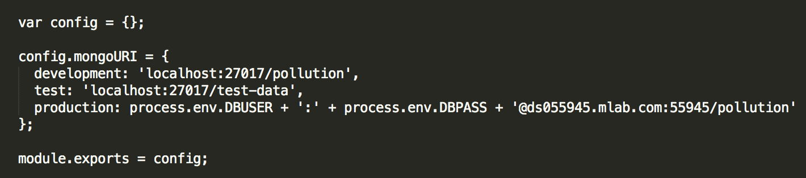
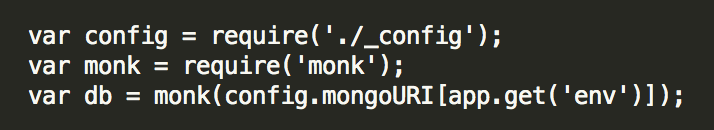

User Manuals
Smartwatch and Smartphone User Manual
Before Getting Started
Before downloading the City Data Visualiser ensure that your Android phone is paired with your Wear device.
Downloading
To download the app, simply click the App Icon on an Android store. This will download and install the City Data Visualiser on your Android phone which will then push the application to your paired Wear devices.
Running the City Data Visualiser
To start using your newly installed Visualiser just follow these simple steps:
- Open the app on on your Android phone. You will see a message that confirms that the process has been started. You may now close the phone app.
- The app will automatically open on the Wear device after a few seconds, displaying the main menu.
- The data will update everytime you enter a new location with the wearable app automatically refreshing.
Navigating Around the App
- The main menu displays an overview to the surrounding pollutant levels.

- Each icon represents a particular pollutant type with the icon colour indicating its level in your area : RED (high levels), ORANGE (medium levels), GREEN (low levels).
- Clicking an icon will take you to the corresponding readings page.
- If there is no data available for a particular pollutant type its icon will be grey and you will not be able to select it.
- Each pollutant will have its own colour-coded rating visible, indicating its level in the surrounding area.

- Tapping on the pollutant icon at the top of the page will show you the raw data values for each pollutant in the surrounding area.

- On the occasion that a certain pollutant has no collected data, the scale will appear empty and the raw value will be replaced with '-' To return to the previous page swipe across the screen from left to right.
API Testing
Documentation
To assist you in understanding the frontend NodeJS API, we have prepared API documentation available at:
Installation
Requires node and npm to be installed.
To install the node dependancies run.
npm install -g nodemon
then start the app with npm start or npm debug to run with debugging messages
This will need a mongo database running as described below:
Database
We use MongoDB for the database. When running the app as development or test you will need to have a database running locally. Once you have mongo installed run it with mongod. If you wish to use a database that isn't running on the default port or isn't running locally change the URI in _config which is described below.
_config.js
This config file is used to specify the database URIs for development, testing and production. It will look something like this:
In our example we store the credentials for the production database as environment variables on the machine the app is running on. it is then called in app.js in a similar way to here:
API docs
To generate the API docs first you have to install apidocsjs
npm install -g apidoc
Then run apidoc -i routes/ -o public/Docs to generate the files needed. This takes routes as the input directory and public/Docs as the output directory.